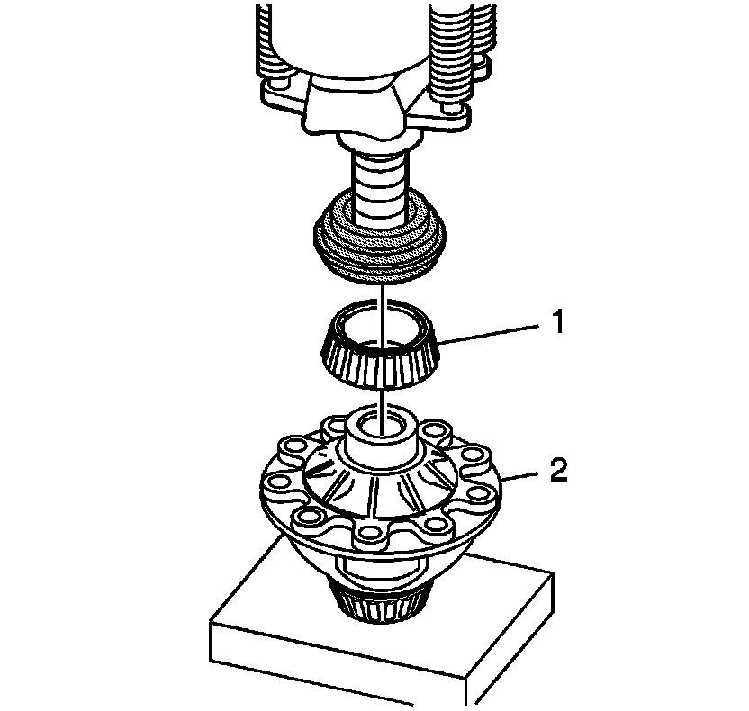
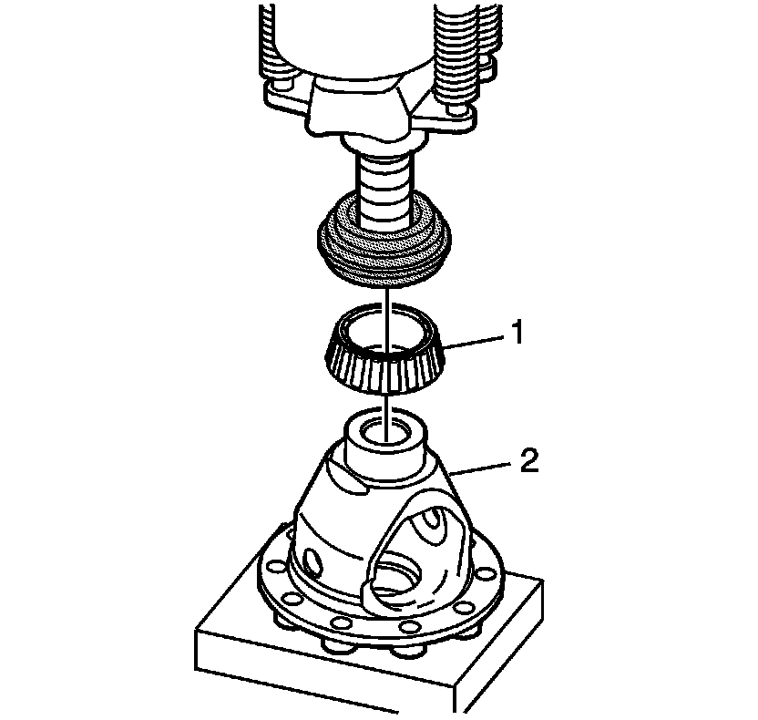

Carrier Bearings: Service and Repair
Differential Side Bearings Assemble
Tools Required
J 45010 Getrag Axle Bearing Race Installer

1. Install the differential case right side bearing (101) using a press and J 45010 . Install the right side bearing (1) until the bearing seats.

2. Install the differential case left side bearing (101) using a press and J 45010 . Install the left side bearing (1) until the bearing seats.